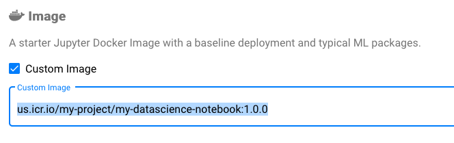

Using IBM Cloud Container Registry (ICR)
Prerequisites
- Install and configure the IBM Cloud CLI.
- Install the CLI plug-in for the IBM Cloud Container Registry by running the command
ibmcloud plugin install container-registry. - Create a namespace in ICR with the command
ibmcloud cr namespace-add <my_namespace>, replace<my_namespace>with your preferred name.
Note: The ICR namespace is different from the Kubeflow Profile namespace. The ICR namespace is used to group container images stored in ICR, while a Kubeflow Profile namespace is a group of all Kubernetes clusters owned by a user.
Image pull secret
As a Kubernetes cluster uses the Secret of docker-registry type to authenticate with a container registry to pull a private image, it needs an image pull secret to pull container images from IBM Cloud Container Registry. You can use the default image pull secret set up by the cluster or your account’s IAM API key.
Using a default image pull secret
By default, the IBM Cloud Kubernetes cluster is set up to pull images from only your account’s namespace in IBM Cloud Container Registry by using the secret all-icr-io in the default namespace. A cluster admin can copy this secret to any Kubernetes namespace used as Kubeflow profile. For example, run below command to copy the secret all-icr-io to the anonymous namespace:
kubectl get secret all-icr-io -n default -o yaml \
| sed 's/namespace: default/namespace: anonymous/g' \
| kubectl -n anonymous create -f -
Once this secret is ready in your Kubeflow profile, a data scientist can use it to pull container images from ICR.
See details and FAQs from the official guide Setting up an image registry.
Getting an IAM API Key
You will need an IBM Cloud IAM API Key to work with ICR if you:
- Have no access to the default image pull secret
all-icr-iofrom thedefaultnamespace. - Need to access container images in other IBM Cloud accounts.
- Need customized IAM policy by using a separate IAM service ID.
If you don’t have an IBM Cloud IAM API Key, follow the official guide Create an API Key.
Once you get your IBM Cloud IAM API Key, run the following command:
kubectl -n <my_namespace> create secret docker-registry <secret_name> \
--docker-server=<registry_domain_name> \
--docker-username=iamapikey \
--docker-password=<ibm_cloud_iam_api_key> \
--docker-email=<docker_email>
Notes:
<my_namespace>: your namespace to use with ICR to create an image pull secret.<ibm_cloud_iam_api_key>: your IBM Cloud API Key.<secret_name>: a unique name for the pull image secret, such asus-icr-io, for example.<registry_domain_name>: the image registry where your registry namespace is set up. Use regional domain name when storing container images in specific region, such asus.icr.iowhen using regionen-usanduk.icr.iowhen using regioneu-gb. See full list of regional domain names from the About IBM Cloud Container Registry page.<docker_email>: your docker email address or any fictional email address, such asa@b.c.
Scenarios
Using container images from ICR in Kubeflow Pipelines
The pull image secret may be set in Kubeflow Pipelines SDK’s PipelineConf. Refer to this imagepullsecrets.py sample in Kubeflow Pipelines project for usage.
Using notebook images from ICR in a Jupyter Notebook
When a namespace is created for Kubeflow with its profile controller, a default service account default-editor is created in that namespace. Before creating a Notebook Server, run following command to patch the service account. Replace <secret_name> with the ICR pull image secret name and <my_namespace> with the Kubeflow profile namespace.
Replace <my_namespace> with your namespace then run below command to patch the service account default-editor with this image pull secret:
kubectl patch serviceaccount default-editor \
-p '{"imagePullSecrets": [{"name": "<secret-name>"}]}' \
-n <my_namespace>
The service account should be updated. Then, when you create the Notebook Server through Kubeflow dashboard, you should be able to choose a Custom Image. Afterwards, set the notebook image path from the ICR as follows:
